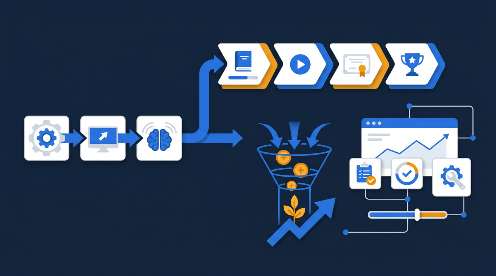
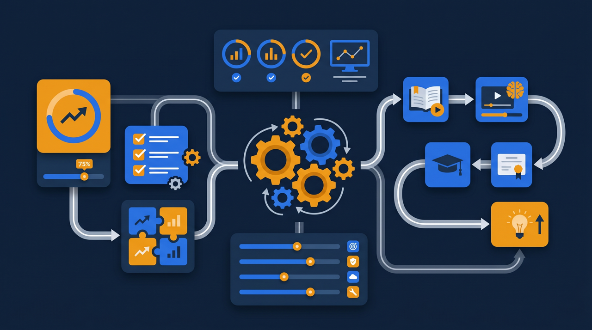
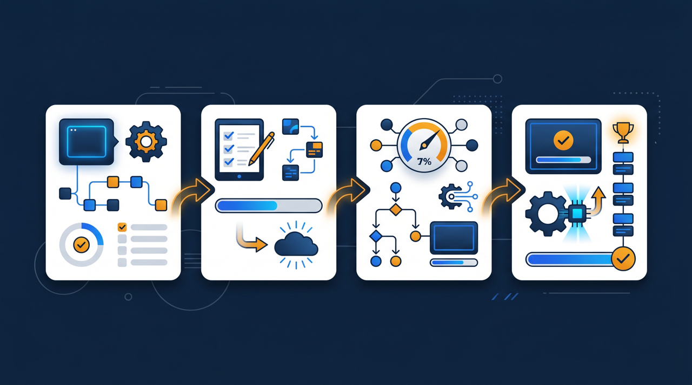

社員教育のために作りこんだ研修——その中身、社内だけで眠らせていませんか。同じ業界の会社や取引先が、まさにその知識を必要としていることは少なくありません。一度作った研修を社外に届け、受講料を得る。それが「社内研修の外販」です。この記事では、自社のノウハウを商品に変え、収益の柱を一つ増やしていく進め方を、実務目線で整理します。

社内研修の外販とは？まず全体像を整理する
社内研修の外販とは、自社の社員教育のために作った研修コンテンツを、社外に向けて販売することを指します。販売の相手は、同業他社、取引先、これから業界に参入したい企業、関連する協会の会員などさまざまです。要は、社内向けに磨いてきた手順や知識を、社外の人にも役立つ商品として整え、受講料を得る取り組みなんですね。
なぜこれが成り立つのでしょうか。それは、自社が当たり前にやっている教育が、外から見ると価値ある知識だからです。長年かけて積み上げた安全教育、現場で磨いた接客の型、独自の機器の扱い方——社内では「いつものこと」でも、これから同じ業界で人を育てたい会社にとっては、ゼロから作るのが大変な財産です。すでに持っている資産を、もう一段活かす。これが外販の発想の核になります。自社にとっての「当たり前」が、他社にとっては「お金を払ってでも欲しい知識」になりうる、という視点の転換が出発点なんですね。
ここで押さえておきたいのは、外販は「新しく何かを作る」より「あるものを活かす」事業だ、という点です。研修を一から開発するのではなく、社内ですでに動いている教材を土台にする。だから、ゼロから新規事業を立ち上げるのに比べて、踏み出しやすい面があります。J-Net21などの中小企業向けの情報でも、既存の強みを生かした事業の多角化は経営の選択肢として取り上げられていますが、社内研修の外販は、その身近な一例だと考えると分かりやすいと思います。
もう一つ、外販ならではの強みがあります。それは、すでに社内で「使われて、直された」教材が土台になっている点です。実際に新人に見せて、分かりにくいところを直し、つまずく箇所を補ってきた教材は、机上で作った教材より実用的なことが多いんですね。社内で揉まれてきたぶん、社外の受講者にとっても役立つ完成度に近づいている。この「すでに現場で鍛えられている」という点が、ゼロから作った研修商品にはない説得力につながるわけです。
なぜ今、社内研修の外販が現実的になったのか
「研修を売る」というと、これまでは講師が出向いて教える集合研修のイメージが強かったかもしれません。けれど、それだと講師の時間が足かせになり、広げにくいですよね。ここ数年で状況が変わってきた理由を整理してみます。
1. 動画とオンラインで「場所と時間」の制約が外れた
研修を動画にしてオンラインで届けられるようになり、講師がその場にいなくても受講できるようになりました。一度作った動画は、何度でも、何人にでも配信できます。つまり、講師の時間と売上が切り離せるわけです。これが外販を現実的にした一番大きな変化です。
2. 受講管理を仕組みで回せるようになった
社外の人に有料で提供するとなると、誰がどこまで受けたか、修了したかを管理する必要があります。これを手作業でやるのは大変ですが、学習管理システム（LMS）を使えば、受講者の登録から進捗の把握、修了証の発行までまとめて回せます。仕組みで管理できるようになったことで、社外への提供の手間が大きく下がりました。
3. 業界全体で「育成の負担」が共通の悩みになっている
人手不足が続くなか、どの会社も人を育てる負担に悩んでいます。だからこそ、すでに整った研修があれば「自社で一から作るより買いたい」というニーズが生まれます。同じ業界内ほど、抱えている育成の悩みが似ているので、外販の相手として相性が良いことが多いんです。
ある事例を挙げます。ある会社が、自社の安全教育の動画を社内用に整えていたところ、取引先から「うちの新人にも見せたい」と相談を受けたそうです。最初は好意で共有していたものの、要望が増えてきたため、社外向けに整え直して有料の講座にした。すると、本業とは別の収益が少しずつ立つようになった、という流れでした。外販は、社内向けの取り組みの延長線上から始まることが多いんですね。

社内研修を外販する4つのステップ
では、具体的にどう進めればいいのでしょうか。最初から大きな商品ラインを揃えようとすると重くなるので、1本を売れる形にするところから始めるのがおすすめです。
ステップ1：外販に向くテーマを1つ選ぶ
社内研修の中から、社外でも役立ちそうな汎用性の高いテーマを1つ選びます。手順がある程度決まっていて、自社だけに通じる内部事情に依存しない内容ほど向いています。安全教育、接客の基本、機器の扱い方、業界特有の知識などが候補になります。逆に、機密に深く関わる内容や、自社固有の事情が前提になっている研修は、外販には向きにくいので外します。
ステップ2：社内向けから「社外向け」に整え直す
選んだ研修を、社外の人が見ても分かる形に整えます。社内の固有名詞や、自社だけの前提を一般化し、機密に関わる部分を取り除く。ここが商品化の肝です。社内では省略していた前提も、社外の受講者には丁寧に補う必要があります。「自社の社員なら分かること」を、「初めて見る人でも分かること」に作り変えていく工程だと考えると整理しやすいです。
ステップ3：価格と提供の形を決める
価格は、制作にかけた費用だけで決めるのではなく、受講者が得られる効果や、同種の集合研修・外部講座の相場を踏まえて決めると整理しやすくなります。提供の形も、一人あたりの受講料にするのか、企業単位のまとめ契約にするのか、一定期間アクセスできる権利として売るのか、いくつか選択肢があります。相手が同業の企業なのか個人なのかによっても、合う形は変わってきます。
ステップ4：配信と受講管理の環境を整える
社外の受講者に有料で届ける以上、誰がどこまで受講したかを管理し、修了を記録できる環境があると安心です。学習管理システム（LMS）を使えば、受講者の登録・進捗の把握・修了証の発行などをまとめて行えます。社外向けでも品質を保てる土台を用意してから提供を始めると、運用が安定します。

外販で気をつけたいポイント
外販は魅力的な取り組みですが、進め方を整理しておかないと、思わぬところでつまずくことがあります。気をつけたい点を挙げておきます。
- 機密情報・自社固有の手の内を、そのまま社外に出していないか確認する
- 社外の人が前提知識なしで理解できる形になっているか見直す
- 競合に強みを丸ごと渡す形になっていないか、出す範囲を線引きする
- 受講管理・修了記録の仕組みを整え、有料提供に耐える運用にする
- 問い合わせや返金など、社外対応の窓口と方針を決めておく
とくに気をつけたいのが、機密と強みの線引きです。自社の競争力の源そのものを外販してしまうと、自分の足元を崩しかねません。外販に出すのは「業界で共通して役立つ基礎の部分」、社内に残すのは「自社ならではの応用や独自の判断」——このあたりの線引きを最初に決めておくと、安心して進められます。
もう一つ、見落とされやすいのが社外対応の準備です。社内向けなら多少の不備も口頭で補えますが、有料で社外に提供する以上、問い合わせへの対応や、内容についての説明責任が生まれます。受講者からの質問にどう答えるか、提供の範囲や期間をどう示すか、といった点をあらかじめ整えておくと、トラブルを避けやすくなります。中小企業庁やJ-Net21などの公的な情報では、新たな商品・サービスを展開する際の留意点も紹介されているので、こうした情報も参考にしながら準備を進めるとよいと考えられます。
外販は「もう一つの収益の柱」になりうる
ここで少し、外販がうまく回り始めた状態をイメージしてみましょう。社内向けに作った研修を社外にも届けられるようになると、本業の売上とは別に、研修からの収益が積み上がっていきます。しかも、一度作った動画は何度でも配信できるので、受講者が増えても制作の手間はそれほど増えません。講師の時間に縛られないぶん、売上の伸び方が本業とは違ってくるわけです。
さらに、外販には収益以外の効果も期待できます。自社の研修を社外に提供しているという事実は、「この分野に詳しい会社」という信頼につながります。業界内での存在感が増し、本業のほうにも良い影響が及ぶことがあるんですね。教育を売ることが、結果として本業の評判を支える、という循環です。
ところで、すべての社内研修が外販に向くわけではありません。前述のとおり、機密に深く関わるものや自社固有の事情が前提のものは向きにくい傾向があります。だからこそ、向くテーマを見極めて1本から始め、反応を見ながら広げていくのが現実的です。最初の1本がうまくいけば、「この内容も売れるのでは」という次の候補が見えてきます。外販は、一気に大きく始めるより、小さく試して育てていくほうが定着しやすいんです。
販売の相手についても、最初から広く構える必要はありません。すでに取引のある会社や、同じ業界のつながりのある相手から声をかけるほうが、話が早いことが多いものです。相手の困りごとが分かっている分、「この研修が役に立ちますよ」と具体的に伝えられますよね。最初の数社で手応えを得てから、業界団体や関連する協会など、より広い相手へ広げていく。こうした段階を踏むと、無理なく外販を育てていけます。
そしてもう一つ、外販を続けるうえで意識したいのが、教材を古びさせない工夫です。制度や手順が変われば、研修の中身も更新が必要になります。社外に有料で提供している以上、内容が古いままだと信頼を損ないかねません。学習管理システムに教材を集約しておけば、更新した内容を一括で差し替えられ、受講者に常に新しい状態を届けやすくなります。売りっぱなしにせず、手入れしながら届け続ける——これが外販を長く続けるコツになります。
なお、社内向けの研修を整える段階——つまり外販の土台を作る段階——では、人材開発支援助成金のように、訓練にかかった経費や賃金の一部を国が助成する制度を活用できる場合があります。社内教育の充実と、その先の外販を見据えた準備を、費用面の制度とあわせて検討してみるとよいでしょう。
まとめ：眠っているノウハウを、収益と信頼に変える
社内研修の外販は、社員教育のために作った研修コンテンツを社外に届け、受講料を得る取り組みです。新しく何かを生み出すというより、すでに社内にある資産をもう一段活かす発想に立っています。動画とオンライン配信で講師の時間の制約が外れ、学習管理システムで受講管理を仕組み化できるようになった今、中小企業にとっても現実的な選択肢になってきました。
進め方としては、外販に向く汎用性の高いテーマを1つ選び、社外向けに整え直し、価格と提供の形を決め、配信と受講管理の環境を整える。機密と強みの線引きや社外対応の準備を押さえておけば、無理なく一本を売れる形にできます。そしてその一本が回り始めれば、本業とは別の収益の柱と、業界内での信頼という二つの果実が見えてきます。
社内に眠っているノウハウは、整え方しだいで収益にも信頼にも変わります。その第一歩として、まずは社外でも役立ちそうな研修テーマを1つ選び、社外向けに整え直すところから始めてみるのがよいでしょう。
よくある質問
自社の社員教育のために作った研修コンテンツを、同業他社・取引先・業界内の企業など、社外に向けて販売することを指します。社内向けに磨いた手順やノウハウを商品として整え、受講料を得る取り組みで、既にある資産を収益に変える発想に立っています。
手順がある程度決まっていて、社外の人にも役立つ汎用性のある内容が向いている傾向があります。安全教育・接客の基本・機器の扱い方・業界特有の知識などです。逆に自社だけに通じる内部事情や、機密に深く関わる内容は外販には向きにくいため、切り分けが必要になります。
制作にかけた費用だけで決めるより、受講者が得られる効果や、同種の集合研修・外部講座の相場を踏まえて決めると整理しやすくなります。一人あたりの受講料、企業単位のまとめ契約、期間制のアクセス権など、提供の形に応じて価格の付け方を変える方法もあります。
社外の受講者に有料で提供する以上、誰がどこまで受講したかを管理し、修了を記録できる仕組みがあると運用しやすくなります。学習管理システム（LMS）を使うと、受講者の登録・進捗の把握・修了証の発行などをまとめて行え、社外向けの提供でも品質を保ちやすくなります。
そのままでは社内の固有名詞や内部前提が含まれていることが多く、社外の受講者には伝わりにくい場合があります。社外の人が見ても理解できるよう、内部事情を一般化し、機密に関わる部分を取り除くといった商品化の工程を経てから提供するほうが、トラブルを避けやすくなります。
まずは既にある社内研修の中から、社外でも役立ちそうな汎用性の高いテーマを1つ選び、社外向けに整え直すところから始めると着手しやすいです。最初から大きな商品ラインを揃えるより、1本を売れる形にして反応を見ながら広げるほうが、無理なく進められる傾向があります。